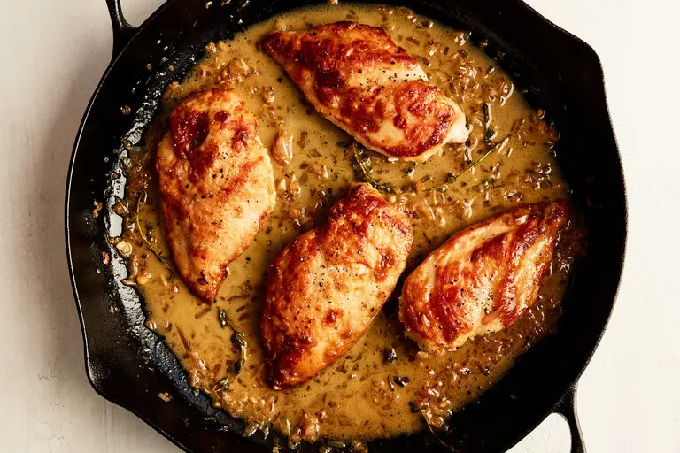

Chicken Breasts with Lemon

Description
In this recipe, which Pierre Franey brought to The Times in 1992
in one of his 60-Minute Gourmet columns, two teaspoons of lemon zest
are added to a simple sauce of lemon juice, thyme, garlic and shallots.
It is, at once, lively and elegant. To round it out, it needs a sturdy
accompaniment. Mr. Franey suggested mashed potatoes with garlic and basil,
with just a little olive oil swirled in.
Ingredients
- 1/2 cup flour
- Salt and pepper to taste
- 4 skinless boneless chicken breasts
- 2 tablespoons olive oil
- 4 sprigs fresh thyme
- tablespoons finely chopped shallots
- 2 teaspoons finely chopped garlic
- 3 tablespoons lemon juice
- 1/2 cup chicken broth
- 2 tablespoons butter
Steps
- Season flour with salt and pepper, and dredge the chicken all over.
Remove the excess flour.
- Heat the oil in a heavy skillet large enough to hold the chicken
pieces in one layer. Add chicken and cook, uncovered, over medium heat
for 5 minutes or until lightly browned.
- Flip the chicken and cook for 5 minutes more, or until cooked through.
Carefully remove the oil from the skillet, leaving the chicken. Discard
the oil.
- Add the thyme, shallots and garlic, and cook for about a minute. Do not
burn the garlic. Add the lemon rind, the lemon juice and the broth.
- Scrape the skillet to dissolve the brown particles that cling to the bottom.
Add the butter, and cook for 3 minutes longer. Serve immediately.